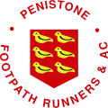

Penistone Footpath Runners & AC
2026–27 Club Championship
Sarah Bradley
Note: points are presented as integers. Hover over them to see exact values.
⋄ indicates qualified (by doing sufficient races)
| Overall | Road | Cross Country | Fell | Challenge |
|---|---|---|---|---|
| 7th overall | 1st overall ⋄ | 6th overall ⋄ | 15th overall ⋄ | |
| 2nd FV35 | 1st FV35 ⋄ | 2nd FV35 ⋄ | 2nd FV35 ⋄ | |
| 495 points | 242 points | 253 points | 0 points | 495 points |
| Race | Category | Date | Position | Time | Points |
|---|---|---|---|---|---|
| Rother Valley Relays | Road | 20/05/2026 | 24:22 | 74 | |
| Barnsley 10K | Road | 28/06/2026 | 691 | 55:18 | 74 |
| Cawthorne Canter | Cross Country | 16/07/2026 | 96 | 48:28 | 79 |
| Tony Audsley Flat Cap 5 | Cross Country | 30/07/2026 | 87 | 43:10 | 85 |
| Canal Race | Cross Country | 01/11/2026 | 71 | 41:47 | 89 |
| No Walk in the Park 11 | Road Series | 07/11/2026 | 54 | 22:39 | 94 |